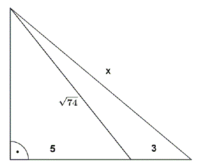

Matura 2014 luty
Cenę pralki obniżono o \( 30\% \), a po dwóch miesiącach nową cenę obniżono jeszcze
o \( 20\% \). W wyniku obu obniżek cena pralki zmniejszyła się o:
A.\(25\% \)
B.\(50\%\)
C.\(44\%\)
D.\(56\%\)
C
Liczba \( 4\sqrt{3}-(1+2\sqrt{3})^2 \) jest równa
A.\(4\sqrt{3}-13 \)
B.\(-13 \)
C.\(8\sqrt{3}+11 \)
D.\(4\sqrt{3}+11 \)
B
Wartość wyrażenia \( \vert{3-x}\vert-\vert{x+4}\vert \) dla \( x \in (3,+\infty) \)
jest równa
A.\(7-2x \)
B.\(-2x-1 \)
C.\(7 \)
D.\(-7 \)
D
Po uproszczeniu wyrażenia \( \frac{(a^2:a^3)^{-2}}{a^{-5}} \), gdzie \( a \ne 0 \),
otrzymamy
A.\(a^7 \)
B.\(a^{-3} \)
C.\(a^3 \)
D.\(a^{-7} \)
A
Obwód trójkąta równobocznego o polu \( \sqrt{3} \) jest równy:
A.\(1 \)
B.\(3 \)
C.\(6 \)
D.\(2 \)
C
Liczba \( \left ( \log_{\sqrt{3}}3\sqrt{3} \right )^4 \) jest równa
A.\(12 \)
B.\(6 \)
C.\(9 \)
D.\(81 \)
D
Miejscami zerowymi funkcji \( f(x)=\frac{(x-2)(x^2-6x+9)}{x^2-9} \) są liczby:
A.\(2 \)
B.\(2;3 \)
C.\(-2;3 \)
D.\(-3;2;3 \)
A
Na trójkącie równoramiennym \( ABC \), w którym \( \vert{AC}\vert=\vert{BC}\vert \)
opisano okrąg o środku \( O \). Prosta \( k \) jest styczna do tego okręgu w punkcie \( B \) i \(
\vert{\sphericalangle BOC}\vert=140^\circ \).  Kąt \( \alpha \) ma miarę
Kąt \( \alpha \) ma miarę
Kąt \( \alpha \) ma miarę A.\(70^\circ \)
B.\(40^\circ \)
C.\(90^\circ \)
D.\(50^\circ \)
B
Proste \( k \) i \( l \) są równoległe.  Miara kąta \( \alpha \) wynosi:
Miara kąta \( \alpha \) wynosi:
Miara kąta \( \alpha \) wynosi: A.\(60^\circ \)
B.\(65^\circ \)
C.\(35^\circ \)
D.\(70^\circ \)
B
Ciąg geometryczny \( (a_n) \) określony jest wzorem \( a_n=\frac{3^n}{4} \). Iloraz
tego ciągu jest równy:
A.\(3 \)
B.\(\frac{3}{4} \)
C.\(\frac{1}{3} \)
D.\(\frac{1}{4} \)
A
Wierzchołek paraboli, która jest wykresem funkcji \( y=x^2 -2x-3 \) leży na
prostej:
A.\(y=-4 \)
B.\(y=4 \)
C.\(y=1 \)
D.\(y=2 \)
A
Punkty \( A=(-1,2) \) i \( B=(2,6) \) są wierzchołkami kwadratu \( ABCD \). Pole
tego kwadratu jest równe:
A.\(17 \)
B.\(65 \)
C.\(25 \)
D.\(7 \)
C
Obrazem punktu \( A=(4,-5) \) w symetrii względem osi \( Ox \) jest punkt:
A.\((-4,-5) \)
B.\((-4,5) \)
C.\((4,5) \)
D.\((4,-5) \)
C
W trójkącie prostokątnym najdłuższy bok ma długość \(25\), a najkrótszy \(7\).
Tangens najmniejszego kąta tego trójkąta jest równy:
A.\(\frac{7}{24} \)
B.\(\frac{24}{7} \)
C.\(\frac{7}{25} \)
D.\(\frac{24}{25} \)
A
Miary kątów czworokąta tworzą ciąg arytmetyczny o różnicy \( 20^\circ \).
Największy kąt tego czworokąta ma miarę:
A.\(150^\circ \)
B.\(135^\circ \)
C.\(120^\circ \)
D.\(60^\circ \)
C
\( x_1 \) jest mniejszym, zaś \( x_2 \)większym miejscem zerowym funkcji \(
f(x)=2x^2+10x+12 \). Wyrażenie \( x_2-x_1 \) ma wartość:
A.\(-1 \)
B.\(1 \)
C.\(-2 \)
D.\(2 \)
B
Do wykresu funkcji \( f(x)=\frac{a}{x+1} \) określonej dla \(x\ne -1\) należy punkt
\( A=(-2,3) \) dla \( a \) równego:
A.\(-3 \)
B.\(3 \)
C.\(-8 \)
D.\(8 \)
A
Wykresy funkcji liniowych \( f(x)=\frac{\sqrt{5}}{3}x+6 \) oraz \(
g(x)=\frac{5}{3\sqrt{5}}x-\frac{1}{6} \) :
A.są prostopadłe
B.przecinają się, ale nie są prostopadłe
C.pokrywają się
D.są równoległe, ale się nie pokrywają
D
Środkiem okręgu o równaniu \( (x+2)^2+(y-3)^2=16 \)
jest punkt:
A.\(S=(2,3) \)
B.\(S=(-2,3) \)
C.\(S=(2,-3) \)
D.\(S=(-2,-3) \)
B
Graniastosłup ma \( 10 \) ścian. Liczba wszystkich krawędzi tego graniastosłupa
wynosi:
A.\(8 \)
B.\(16 \)
C.\(24 \)
D.\(32 \)
C
Liczba pierwiastków wielomianu \( W(x)=x^3-3x^2+4x-12\ \) jest równa:
A.\(3 \)
B.\(2 \)
C.\(1 \)
D.\(0 \)
C
Jacek rzucił pięć razy symetryczną sześcienną kostką do gry. Liczba wyrzuconych
oczek wynosiła kolejno \(1, 2, 3, 4, 5\). Prawdopodobieństwo, że w szóstym rzucie wypadnie \(6\)
oczek jest równe:
A.\(1 \)
B.\(0 \)
C.\(\frac{5}{6} \)
D.\(\frac{1}{6} \)
D
Jeżeli wysokość stożka zwiększymy trzykrotnie, a długość promienia zmniejszymy trzy
razy, to objętość nowego stożka:
A.zwiększy się trzy razy
B.zmniejszy się trzy razy
C.zmniejszy się dziewięć razy
D.nie zmieni się
B
Średnia arytmetyczna wszystkich liczb pierwszych z przedziału \( \langle 1; 13 ) \)
jest równa:
A.\(5{,}6 \)
B.\(\frac{29}{6} \)
C.\(\frac{41}{6} \)
D.\(6 \)
A
Przekątna ściany sześcianu ma długość \( 5\sqrt{2} \). Pole powierzchni tego
sześcianu jest równe:
A.\(5 \)
B.\(25 \)
C.\(150 \)
D.\(125 \)
C
Rozwiąż nierówność \( (2-x)^2 \le 9 \).
\(x\in \langle -1;5 \rangle \)
Udowodnij, że reszta z dzielenia liczby \( 34429^3 \) przez \( 17 \) jest równa \(
13 \).
Oblicz długość odcinka \( x \) zaznaczonego na rysunku. 
\(x=\sqrt{113}\)
Udowodnij, że punkty \( A=(1,2), B=(-2,8)\) i \( C=(-25,54) \) są współliniowe.
Ze zbioru liczb \( {1, 2, 3, 4, 5, 6} \) losujemy dwa razy po jednej liczbie bez
zwracania. Oblicz prawdopodobieństwo zdarzenia polegającego na tym, że suma wylosowanych liczb jest
liczbą podzielną przez \( 3 \).
\(\frac{1}{3}\)
Ciąg \( (2x – 1, y, 6x + 3)\ \) jest arytmetyczny, a ciąg \( (3, y, 27)\ \) jest
geometryczny rosnący. Oblicz \(x\) i \(y\).
\(x=2\), \(y=9\)
Drut o długości \(96\) cm wykorzystano w całości na wykonanie szkieletu ostrosłupa
prawidłowego czworokątnego o wszystkich krawędziach równej długości. Zaznacz na rysunku kąt
nachylenia ściany bocznej ostrosłupa do płaszczyzny podstawy i wyznacz cosinus tego kąta.
\(\cos \alpha =\frac{\sqrt{3}}{3}\)
Rysunek obok przedstawia wykres funkcji kwadratowej \( f \). Zapisz wzór funkcji \(
f \) w postaci ogólnej i podaj jej zbiór wartości. 
\(f(x)=-x^2-2x+3\)
\(ZW=(-\infty ;4\rangle \)
Wykwalifikowany robotnik pracując sam, wykonałby pracę w czasie krótszym o \(10\)
dni od pracownika niewykwalifikowanego. Aby pracę wykonać szybciej, powierzono ją obu robotnikom,
którzy pracując razem, wykonali ją w ciągu \(12\) dni. W ciągu ilu dni wykonałby pracę każdy
robotnik pracując samodzielnie?
\(20\) dni oraz \(30\) dni